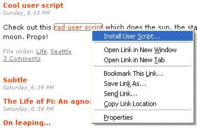
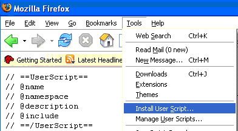
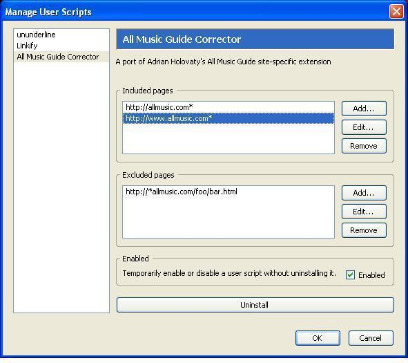

You can install scripts by right-clicking on links to them and selecting "Install User Script...". Or, you can select the same option under the tools menu while viewing the contents of a user script file.

Each user script will be automatically included with one or more web pages. You can fine-tune which pages will be affected when you install or by going to Tools > Manage User Scripts.
 Manage User Scripts" />